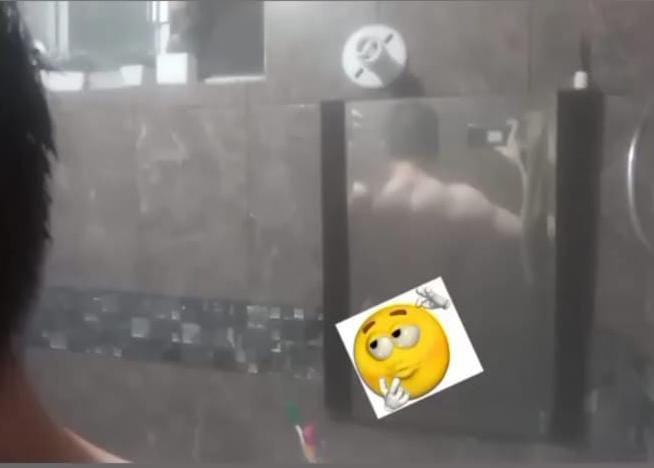

Mis pasatiempos
Tambien me gusta mucho ir al gym era el lugar perfecto para hacer amigos ,me gustaba competir con mi besty en las rutinas . Pero lamentable mente por motivos de salud y tiempo deje de ir 😔
esta era mi rutina si mal no recuerdo ,aveces convinaba ejercicios por que terminaba algo temprano y aparte me gustaba el ambiente
Rutinas de Entrenamiento
Ejercicios de Pierna
- Sentadillas
- Prensa de pierna
- Desplantes
- Elevación de talones
- Hip thrust
- Extensiones de pierna
- Curl femoral
Ejercicios de Espalda
- Dominadas
- Remo con barra
- Peso muerto
- Jalón al pecho
- Remo con mancuernas
- Face pull
- Pull-over
Ejercicios de Pecho
- Press de banca
- Press inclinado
- Fondos en paralelas
- Aperturas con mancuernas
- Press declinado
- Flexiones
- Crossover en polea
Ejercicios de Hombro
- Press militar
- Elevaciones laterales
- Elevaciones frontales
- Encogimientos
- Press Arnold
- Remo al mentón
- Face pull
